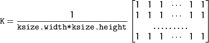

Example
a = imread("/home/Pictures/img.jpg"); b=blur(a,3,3,-1,-1); imshow(b); |  |  |
Blurs an image using the normalized box filter.
List output_matrix = blur(List input_matrix,int ksize_height,int ksize_width,int anchorX,int anchorY);
the image matrix on which blur has to be applied
height of blurring kernel size
width of blurring kernel size
x-coordinate of anchor point. Centre point is denoted by "-1"
y-coordinate of anchor point. Centre point is denoted by "-1"
The function smoothes an image using the kernel :

a = imread("/home/Pictures/img.jpg"); b=blur(a,3,3,-1,-1); imshow(b); | | |